The Computation of Pi by Archimedes
Copyright 2010, Bill McKeeman, Dartmouth College
Contents
Abstract
It is famously known that Archimedes approximated by computing the perimeters of many-edged regular polygons, one polygon inside the circle and one outside. This presentation recapitulates and explains Archimedes' computation. The surprise to me was how many "tweaks" Archimedes applied at various stages of an otherwise systematic approach.
format long
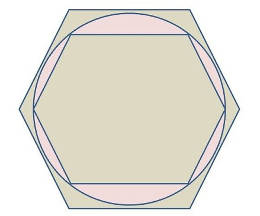
The General Plan
The circumference of a circle of radius 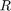 is 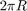 which defines . The perimeter of the inner hexagon is 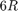 which implies 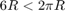, thus providing a lower bound 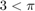. Computing the perimeter of the outer hexagon supplies an upper bound. Increasing the number of edges tightens the bounds. Thus thought Archimedes.
The Context
The year was earlier than 200 BCE. Archimedes, who lived in Sicily, knew of the work in Alexandria, where Euclid had published his "Elements" some years before.
Greek mathematics used a kind of decimal integer. For example 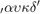 means 1424. Mathematicians could express rational numbers, but did not have the concept of the digit 0, the decimal point or the means to represent irrational numbers such as and square roots. Irrational numbers were approximated by rational upper and lower bounds.
Finally, algebra was unavailable, so words were used to describe computations and algorithms. The flavor of ancient presentation is provided by Archimedes' statement "The surface of any sphere is four times its greatest circle." We would write 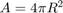.
The Computation of
The result presented by Archimedes translates to
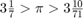
which appears, using the numbers of Archimedes' time, as
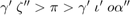
Advice to the Reader
What follows is a detailed rendition of the steps taken by Archimedes. While following the logic, it may help the reader to look ahead to the Summary to get the big picture of all the computations on one page.
The Outer n-gon
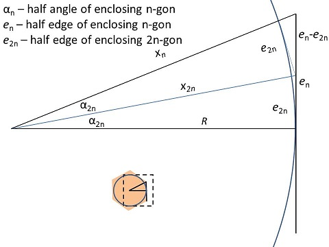
Given the half-edge length 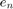 of any regular n-gon enclosing a circle, one can compute the half-edge length 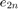 of the enclosing regular 2n-gon based on the equations
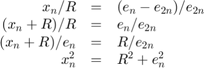
The first equation is a consequence of similar triangles. The second and third equations are algebraic manipulations of the first. The fourth equation is an application of the Pythagorean Theorem.
The last two equations are combined into an iteration.
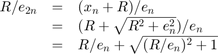
Let 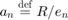. The result is a recursive formula for 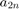.
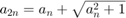
The value of  more than doubles at each step, implying that each edge is less than one half the length of its predecessor at each step, which is consistent with one's intuitive understanding of the process.
more than doubles at each step, implying that each edge is less than one half the length of its predecessor at each step, which is consistent with one's intuitive understanding of the process.
Archimedes carried out the computation up to the 96-gon, starting with the 30,60,90 degree triangle bounded by sides
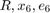
which has known dimensions. In MATLAB, for the unit circle,
R = 1; alpha_6 = 2*pi/12; % 30 degrees, half angle of the hexagon x_6 = R/cos(alpha_6); % R*sqrt(4/3), hypotenuse e_6 = x_6*sin(alpha_6); % R*sqrt(1/3), half edge of the hexagon fprintf('e_6 = %.6g*R = R*sqrt(1/3)\n', e_6);
e_6 = 0.57735*R = R*sqrt(1/3)
Since we know the half-edge 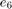 for 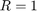, trying the formula is straightforward.
a_6 = R/e_6; a_12 = a_6 + sqrt(a_6^2 + 1); a_24 = a_12 + sqrt(a_12^2 + 1); a_48 = a_24 + sqrt(a_24^2 + 1); a_96 = a_48 + sqrt(a_48^2 + 1); e_96 = R/a_96;
The values of are more than doubling; the values 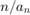 are slowly decreasing and converging to as expected
fprintf('n '); fprintf('%7d ', 6, 12, 24, 48, 96); fprintf('\na_n '); fprintf('%.6g ', a_6, a_12, a_24, a_48, a_96); fprintf('\nn/a_n '); fprintf('%.6g ', 6/a_6, 12/a_12, 24/a_24, 48/a_48, 96/a_96); fprintf('... %.6g\n', pi);
n 6 12 24 48 96 a_n 1.73205 3.73205 7.59575 15.2571 30.5468 n/a_n 3.4641 3.21539 3.15966 3.14609 3.14271 ... 3.14159
Unfortunately for Archimedes, he did not have double precision floating point so he, and therefore we, still have some work to do.
Hand Calculation
It is simpler for hand calculation if the intermediate results are improper fractions with reasonably large integer parts. This is achieved by multiplying the iteration formula by an arbitrary integer constant 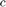, the value of which can be chosen later.
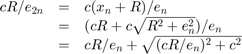
Let 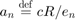 and 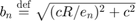. The result is new formulas for 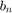 and .
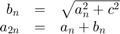
Two mutually recursive formulas are provided because (1) is irrational and must be replaced by a rational bound at each step and (2) the edge of the inner n-gon is expressed in terms of , not .
MATLAB fractions
This presentation now switches to "Greek mode," that is, variable precision integers (vpi) and fractions (fr), provided by John D'Errico and Ben Petschel on the MathWorks File Exchange. Except for type conversions putting values into the vpi and fr domains, their packages are non-intrusive in the code that follows. Thank you to MathWorks, John and Ben.
Bounds for Irrational Numbers
Archimedes states without explanation
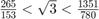
This statement and other similar ones are easily checked without taking square roots in MATLAB (and by Archimedes' readers).
assert((265/153)^2 < 3 && 3 < (1351/780)^2);
Square Roots of Rationals
Heath, in his book "The Works of Archimedes," devotes 19 pages to speculations by famous mathematicians on how Archimedes took square roots. At all times Archimedes had to make a tradeoff between the better accuracy of larger denominators against the computational labor involved dealing with larger integers. The speculation I prefer is that Archimedes used the known iteration for square root with a good starting value to get a very accurate fraction, then picked among the continued fraction convergents to get suitable values of lesser accuracy.
The following iteration for square root of 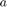,
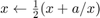
can be restated for rational radicand 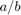 as
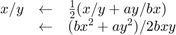
It is not hard to pick a good-enough starting point for an improper fraction. If the integer has an odd number of digits and leading digit 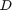, pick  so that 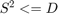. If the integer part has an even number of digits and leading digits 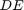, pick 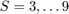 so that 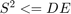. Then form the initial value 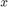 by appending to digit
so that 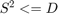. If the integer part has an even number of digits and leading digits 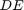, pick 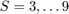 so that 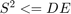. Then form the initial value 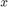 by appending to digit  a 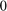 for every pair of unexamined digits. That is, for 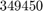, 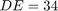, 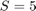, 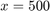, 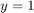.
a 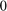 for every pair of unexamined digits. That is, for 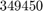, 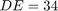, 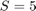, 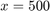, 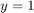.
Carrying out four steps of the computation for input 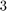 gives rational approximations for the 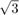.
n = 4; % the number of steps to take a = vpi(3); b = vpi(1); % the radicand a/b x = 1; y = 1; % starting values for the rational result for i=1:n % all values are now vpi t = b*x^2 + a*y^2; y = 2*b*x*y; g = gcd(t,y); % known as Euclid's algorithm x = t/g; % exact division y = y/g; fprintf('%.16f %6d/%d\n', double([fr(x)/fr(y), x, y])); end fprintf('...\n%.16f sqrt(%d/%d)\n', ... sqrt(double(a/b)), double(a), double(b));
2.0000000000000000 2/1 1.7500000000000000 7/4 1.7321428571428572 97/56 1.7320508100147274 18817/10864 ... 1.7320508075688772 sqrt(3/1)
Getting the Continued Fraction
Taking the most accurate of the four approximations above,
num = vpi(18817); den = 10864; cf = vpi([]); % cf coefficients are always integers while den > 0 % compute continued fraction if den == 1 % choose long form of cf if num == 1 r = vpi(1); % finish with digit 1 den = 0; else % force one more digit r = num - 1; num = 1; end else % grab a digit r = num/den; % integer division t = num - r*den; % new num/den num = den; den = t; end cf(end+1) = r; end
gives the continued fraction for 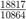.
fprintf('%d ', double(cf));
1 1 2 1 2 1 2 1 2 1 2 1 2 1 2 1
Evaluating the continued fraction gives a series of convergents, alternating greater or less than the input fraction. As can be seen in the printout, they are good approximations to .
fprintf('x/y (x/y)^2+-err\n'); % table title n = numel(cf); for i = 1:n % evaluate continued fraction if i == 1 % startup case h(i) = cf(i); k(i) = 1; elseif i == 2 % startup case h(i) = cf(i)*h(i-1) + 1; k(i) = cf(i)*k(i-1); elseif i > 2 % rest of cf h(i) = cf(i)*h(i-1) + h(i-2); k(i) = cf(i)*k(i-1) + k(i-2); end % express result as L+-r/K^2 (need double for fprintf) H=double(h(i)); K=double(k(i)); L=round(H^2/K^2); r=H^2-L*K^2; conv = [sprintf('%d/%d', H, K), ' ']; if r == 0 fprintf('%s %d\n', conv(1:16), L); elseif r < 0 fprintf('%s %d-%d/%d^2\n', conv(1:16), L, abs(r), K); else fprintf('%s %d+%d/%d^2\n', conv(1:16), L, r, K); end end
x/y (x/y)^2+-err 1/1 1 2/1 4 5/3 3-2/3^2 7/4 3+1/4^2 19/11 3-2/11^2 26/15 3+1/15^2 71/41 3-2/41^2 97/56 3+1/56^2 265/153 3-2/153^2 362/209 3+1/209^2 989/571 3-2/571^2 1351/780 3+1/780^2 3691/2131 3-2/2131^2 5042/2911 3+1/2911^2 13775/7953 3-2/7953^2 18817/10864 3+1/10864^2
Perhaps it was from this list that Archimedes chose
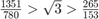
Since there is not a unique choice, we assume that Archimedes picked values that would lead to the elegant result for . Mathematicians contemporary to Archimedes mention that later Archimedes did get a more accurate result.
In any case the objective here is , not square roots, so from this point on I shall just report the choices Archimedes made for square roots.
The Upper Bound
For the upper bound computation, Archimedes chose the initial values
c = 153; a_6 = c*R/e_6; % 265.0038 b_6 = c*2; % which is precise a_6 = floor(a_6); % choose rational lower bound fprintf('a_6 = %d, b_6 = %d, c = %d\n', a_6, b_6, c);
a_6 = 265, b_6 = 306, c = 153
There are two values for . The first result comes from the geometry of the triangle; the second is a chosen rational approximation. In this case the chosen is just a little low. Further choices for will be consistently low. The consequence is that rational estimate for is less than the fully accurate irrational value of . The value of is therefore greater than the fully accurate half-edge length of the enclosing 96-gon. Finally is greater than the half-perimeter of the enclosing 96-gon which is itself greater than .
Iterating
Following the reasoning above, each time is computed, it must be replaced by a rational bound that is smaller than the computed irrational value. The amount of the difference will be small if the values are well chosen. Considering Archimedes chose them, we should expect the best. Nevertheless, we will check. There are three values given by Archimedes for .
assert(b_6^2 <= (c*R/e_6)^2 + c^2);
a_12 = a_6 + b_6; % 571
Archimedes chose
b_12 = fr(591+1/8); assert(b_12^2 < a_12^2+c^2);
a_24 = a_12 + b_12; % 1162 1/8
Warning: input value has a remainder mod 1, however function "rat" is not defined for this object; rounding downwards instead
Archimedes chose
b_24 = fr(1172+1/8); assert(b_24^2 < a_24^2+c^2);
a_48 = a_24 + b_24; % 2334 1/4
Warning: input value has a remainder mod 1, however function "rat" is not defined for this object; rounding downwards instead
Archimedes chose
b_48 = fr(2339+1/4); assert(b_48^2 < a_48^2+c^2);
a_96 = a_48 + b_48; % 4673 1/2
Warning: input value has a remainder mod 1, however function "rat" is not defined for this object; rounding downwards instead
Archimedes made one more approximation, replacing the final (ugly) computed upper bound by one that is less tight but more elegant.
pi_hi = fr(3+1/7) % Chosen by Archimedes for publication pi_est1 = 96*c/a_96 % Computed by Archimedes pi % MATLAB's best
Warning: input value has a remainder mod 1, however function "rat" is not defined for this object; rounding downwards instead pi_hi = 3.142857142857143 pi_est1 = 3.142826575371777 ans = 3.141592653589793
Using MATLAB, we can check that the values are ordered as expected.
assert(pi_hi > pi_est1 && pi_est1 > pi);
The Lower Bound
There is another diagram (in Heath), and another set of geometric equations for the lower bounds which leads to the same recursive formulas. One should not be surprised. In both cases the n-gons are the same; it is the scale that differs.
This time the chosen rational values of must be greater than the true values, causing the computed half-perimeter to be less than the actual half-perimeter of the inner 96-gon.
The initial values are
a_6 = 1351; b_6 = 1560; c = 780; assert(a_6^2+c^2 > b_6^2);
Iterating
The values chosen for therefore must also be greater than the irrational true values. Repeating the iteration, and in this case also removing some common factors:
a_12 = a_6 + b_6; % 2911
Archimedes chose
b_12 = fr(3013+3/4); assert(b_12^2 > a_12^2+c^2);
a_24 = a_12 + b_12; % 5924 3/4
Warning: input value has a remainder mod 1, however function "rat" is not defined for this object; rounding downwards instead
Archimedes removed the common factor from and .
a_24 = a_24*(4/13); % 1823 c = c*(4/13); % 240
Archimedes chose
b_24 = fr(1838+9/11); assert(b_24^2 > a_24^2+c^2);
a_48 = a_24 + b_24; % 3661 9/11
Warning: input value has a remainder mod 1, however function "rat" is not defined for this object; rounding downwards instead
Archimedes removed the common factor
a_48 = a_48*(11/40); % 1007 c = c*(11/40); % 66
Archimedes chose
b_48 = fr(1009+1/6); assert(b_48^2 > a_48^2+c^2);
a_96 = a_48 + b_48; % 2016 1/6
Warning: input value has a remainder mod 1, however function "rat" is not defined for this object; rounding downwards instead
Archimedes chose
b_96 = fr(2017+1/4); assert(b_96^2 > a_96^2+c^2); pi_lo = fr(3+10/71); % Chosen by Archimedes for publication pi_est2 = 96*c/b_96; % Computed by Archimedes
Warning: input value has a remainder mod 1, however function "rat" is not defined for this object; rounding downwards instead Warning: input value has a remainder mod 1, however function "rat" is not defined for this object; rounding downwards instead
The five values are
disp(pi_hi); disp(pi_est1); disp(pi); disp(pi_est2); disp(pi_lo);
3.142857142857143 3.142826575371777 3.141592653589793 3.140909654232247 3.140845070422535
The difference between the published bounds is
disp(pi_hi - pi_lo)
0.002012072434608
Check that the five values are in decreasing order
assert(pi_lo < pi_est2 && pi_est2 < pi && pi < pi_est1 && pi_est1 < pi_hi);
QED
Therefore, .
Archimedes might have written:
Summary
Here are all of the intermediate results in a table. Most of the action is in the choosing of . Recall that the chosen values of for the outer case must be less than the computed values and conversely greater for the inner case.
![$\begin{array}{lllcllrl} & \rm outer &&&& \rm inner && \rm remark \\ a & b & c & \mathbf{n} & a & b & c \\ 265 & 306 & 153 & \mathbf{6} & 1351 & 1560 & 780 & \rm start \\ 571 & \sqrt{571^2+153^2} & 153 & \mathbf{12} & 2911 & \sqrt{2911^2+780^2}\makebox[2pt]{} & 780 \\ & 591.1430\ldots &&&& 3013.6889\ldots && \rm compute \\ & 591\frac{1}{8} &&&& 3013\frac{3}{4} && \rm choose \\ &&& \mathbf{24} & 5924\frac{3}{4}\makebox[5pt]{} && 780 & \mbox{factor out}\;\frac{13}{4} \\ 1162\frac{1}{8} & \sqrt{1162\frac{1}{8}^2+153^2} & 153 & & 1823 & \sqrt{1823^2+240^2} & 240 \\ & 1172.1534\ldots &&&& 1838.7303\ldots && \rm compute \\ & 1172\frac{1}{8} &&&& 1838\frac{9}{11} && \rm choose \end{array}$](ComputationOfPiByArchimedes_eq04176473854693838108.png)
![$\begin{array}{lllcllrl} && & \mathbf{48} & 3661\frac{9}{11} && 240 & \mbox{factor out}\;\frac{40}{11} \\ 2334\frac{1}{4} & \sqrt{2334\frac{1}{4}^2+153^2} & 153 && 1007 & \sqrt{1007^2+66^2} & 66 \\ & 2339.2589\ldots &&&& 1009.1605\ldots && \rm compute \\ & 2339\frac{1}{4} &&&& 1009\frac{1}{6} && \rm choose \\ 4673\frac{1}{2} & (b\;\mbox{not needed}) & 153 & \mathbf{96} & 2016\frac{1}{6} & \sqrt{2016\frac{1}{6}^2+66^2} & 66 \\ &&&&& 2017.2467\ldots && \rm compute \\ &&&&& 2017\frac{1}{4} && \rm choose \end{array}$](ComputationOfPiByArchimedes_eq05819362629336590668.png)
References
My principal references are "The Works of Archimedes" (1897), "The Method of Archimedes Recently Discovered by Heiberg" (1912) and "A History of Greek Mathematics" (1921) all by Sir Thomas Heath. The 1921 book is still in print; Dartmouth Library dug wonderful dusty old tomes from storage for the rest. I also watched an enjoyable lecture on Archimedes in "Great Thinkers, Great Theorems" by Professor William Dunham (Great Courses series) and read some entries in Wikipedia.